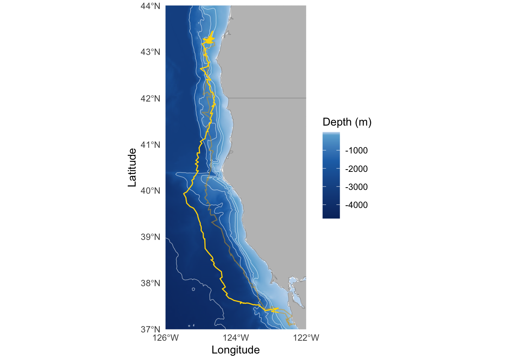
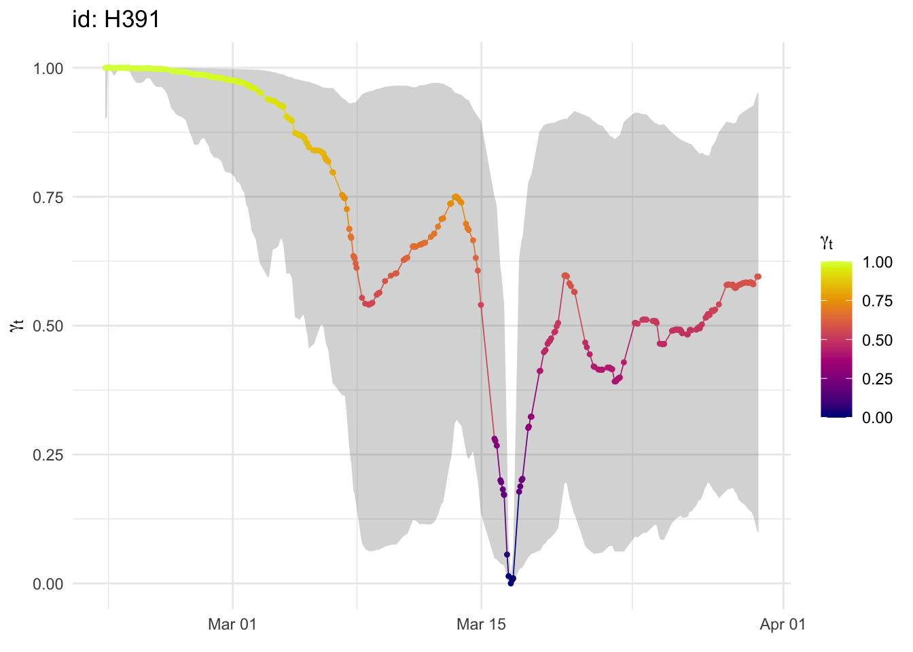
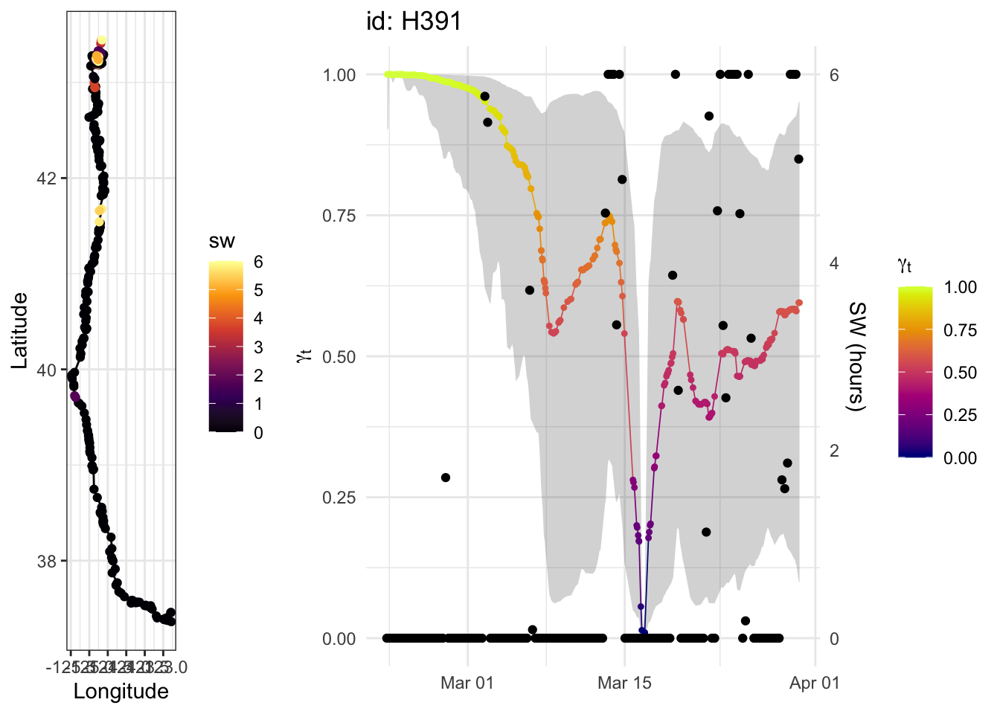
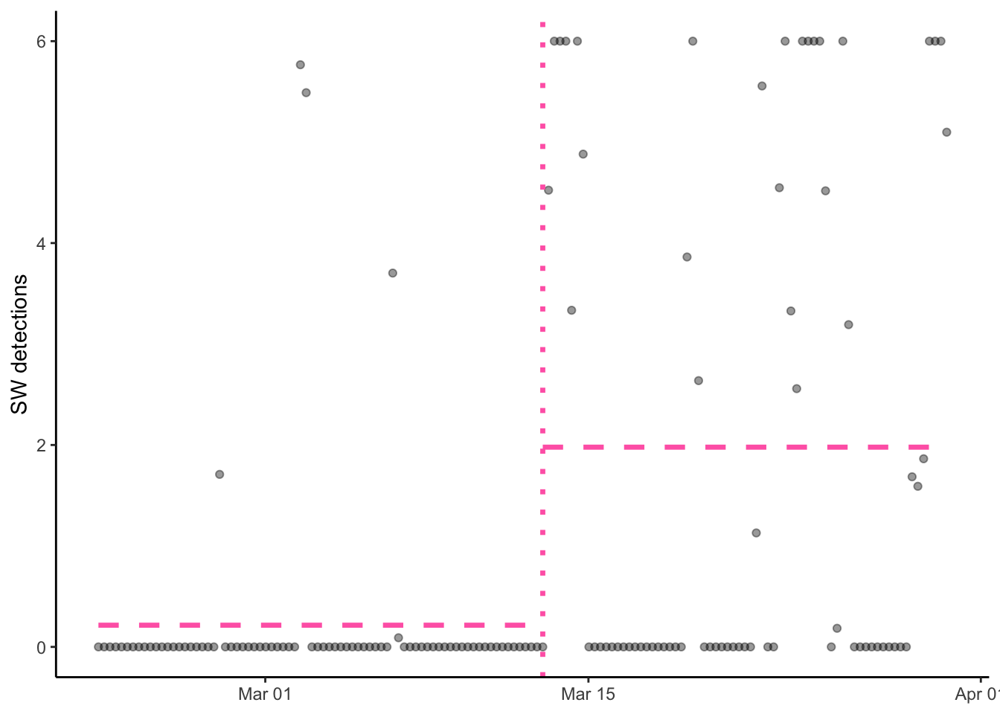
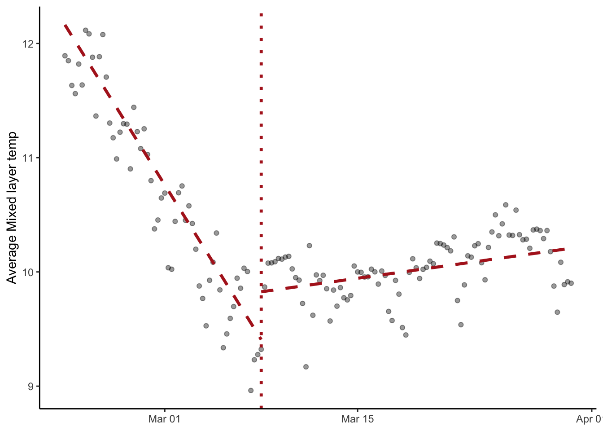
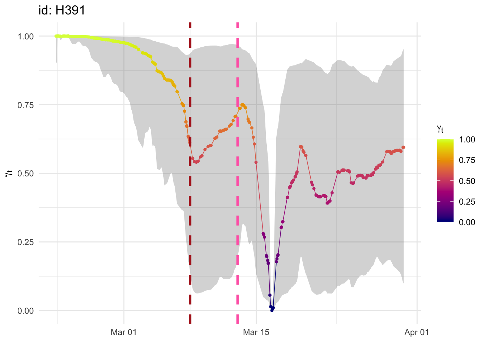

library(aniMotum)
library(tidyverse)
library(terra)
library(tidyterra)
library(argosfilter)
theme_set(theme_bw())broad-sw-new
Does elephant seal movement change in the presence of sperm whale clicks?
Formatting location data (a mix of GPS and Argos). Based on Storrie et al., 2025 and the Wildlife Computers documentation.
track <- read_csv(here::here("data/255226-gps-1/H391-255226-1-Locations.csv"),
show_col_types = FALSE,
locale = locale(tz = "UTC")) %>%
#remove Argos locations with no associate ellipse error values and GPS locations with fewer than 4 sattelites.
filter(!(Type == "Argos" & is.na(`Error Ellipse Orientation`)),
!(Type == "FastGPS" & suppressWarnings(as.numeric(Quality) < 4))) %>%
#Warning because as.numeric() converts the Argos quality estimates to NAs
mutate(Date = parse_date_time(Date,
orders = c("H:M:S.OS d-b-Y",
"H:M:S d-b-Y")))
#Remove locations that would require unrealistic swimming speeds (>3m/s)
track_filtered <- track %>%
arrange(Date) %>%
mutate(filter_flag = sdafilter(
lat = Latitude,
lon = Longitude,
dtime = Date,
lc = Quality,
vmax = 3
)) %>%
filter(filter_flag == "not") %>% #keep only realistic locations
ungroup()Read in recording details and clip track to recording time.
#read in the recording details
#wav_timestamps.csv is the output of get_wav_timestamps.R.
recording <- read.csv(here::here("data/wav_timestamps.csv")) %>%
mutate(start = ymd_hms(start_time, tz = "UTC"),
end = ymd_hms(end_time, tz = "UTC")) %>%
drop_na(end)
#filter the track to only when the acoustic tag was recording
track_overlap <- filter(track_filtered, between(Date,
first(recording$start),
last(recording$end)))
#on average, during the recording period, how often did we get a filtered location?
avg_loc_timing <- track_overlap %>%
mutate(interval = as.numeric(difftime(Date,
lag(Date),
units = "hours"))) %>%
summarize(mean_interval_hrs = mean(interval, na.rm = TRUE)) %>%
round(1)On average, we got a filtered location every 2 hours.
track_overlap %>%
ggplot(aes(Longitude, Latitude)) +
geom_path() 
Format track data for aniMotum.
track_formatted <- track_overlap %>%
mutate(id = c("H391"),
`Error Radius` = if_else(Type == "FastGPS", 50, `Error Radius`),
Quality = if_else(Type == "FastGPS", "G", Quality)) %>%
format_data(date = "Date",
coord = c("Longitude", "Latitude"),
lc = "Quality") %>%
as.data.frame()fit <- fit_ssm(track_formatted,
vmax = 3, #max travel rate
model = "mp", #fits correlated random walk
time.step = 6,
control = ssm_control(verbose = 0))summary(fit) Animal id Model Time n.obs n.filt n.fit n.pred n.rr converged AICc
H391 mp 6 434 17 417 149 . TRUE 4876.2
--------------
H391
--------------
Parameter Estimate Std.Err
rho_p -0.0571 0.1099
sigma_x 0.689 0.0494
sigma_y 0.7759 0.0645
rho_o 0.0089 0.0742
tau_x 0.1315 0.0061
tau_y 0.0866 0.0049
sigma_g 0.1443 0.0507p1 <- plot(fit, type = 3)$H391
p2 <- ggplot(grab(fit, as_sf = TRUE)) +
geom_sf(aes(color = g)) +
scale_color_gradient2(midpoint = 0.5, limits = c(0, 1))
p1
Now read in the manual detections of sperm whales.
source(here::here("R/broad_funcs.R"))
sw_valid <- read_csv(here::here("data/sw/SWCombBouts_Validated.csv"),
show_col_types = FALSE) %>%
mutate(start= as.POSIXct(start, tz = "UTC"),
end = as.POSIXct(end, tz = "UTC"),
duration = end - start) %>%
select(-notes)
window_hr <- 6
acou_agg_valid <- tibble(date = seq(first(recording$start),
last(recording$end),
by = window_hr * 3600)) %>%
mutate(date2 = date - window_hr * 3600,
SW = map_dbl(date, \(d) sum_odon_exposure(data = sw_valid,
win_start = d,
win_hr = window_hr)),
SW_lag = lag(SW),
SW_lead = lead(SW),
SW_std = (SW - mean(SW)) / sd(SW),
id = "H391")
total_sw_hrs <- round(sum(as.numeric(sw_valid$duration)), 1)The seal recorded 155.2 of sperm whales (out of 740 total hours of recording - about 21% of the time).
Plot the track with SW bouts.
track_overlap_sw <- track_overlap %>%
left_join(
acou_agg_valid %>% select(date2, SW),
join_by(closest(Date >= date2))
) %>%
rename(sw = SW) %>%
ggplot(aes(Longitude, Latitude)) +
geom_path() +
geom_point(aes(color = sw)) +
scale_color_viridis_c(option = "inferno")Plot movement persistence with SW presence (just for visualization purposes).
p_sw <- plot(fit, type = 3)$H391 +
geom_point(aes(date, SW / max(SW)), acou_agg_valid) +
scale_y_continuous(sec.axis = sec_axis(~ . * max(acou_agg_valid$SW), name = "SW (hours)"))
cowplot::plot_grid(track_overlap_sw, p_sw, ncol = 2, rel_widths = c(2, 5))
Look at the change in the mean of SW detections over time using a breakpoint model.
library(changepoint)Loading required package: zoo
Attaching package: 'zoo'The following object is masked from 'package:terra':
time<-The following objects are masked from 'package:base':
as.Date, as.Date.numericSuccessfully loaded changepoint package version 2.3
WARNING: From v.2.3 the default method in cpt.* functions has changed from AMOC to PELT.
See NEWS for details of all changes.
Attaching package: 'changepoint'The following object is masked from 'package:terra':
nsegsw_cpt <- cpt.mean(acou_agg_valid$SW, method = "AMOC")
breakpoint_date <- acou_agg_valid$date[sw_cpt@cpts[1]]
sw_segs <- tibble(
seg_start = acou_agg_valid$date[c(1, sw_cpt@cpts[1])],
seg_end = acou_agg_valid$date[c(sw_cpt@cpts[1], nrow(acou_agg_valid))],
seg_mean = sw_cpt@param.est$mean
)
ggplot(acou_agg_valid, aes(x = date, y = SW)) +
geom_point(alpha = 0.4) +
geom_segment(aes(x = seg_start, xend = seg_end, y = seg_mean, yend = seg_mean),
sw_segs,
linetype = "dashed",
color = "hotpink",
linewidth = 1.2) +
geom_vline(xintercept = breakpoint_date,
linetype = "dotted",
color = "hotpink",
linewidth = 1.2) +
labs(x = NULL, y = "SW detections") +
theme_classic()
Compare to a breakpoint model for the mixed layer temperature.
#mixed layer temperature - using average MLT and minimum temperature from this file
mlt <- read_csv(here::here("data/23A1302/out-MixLayer.csv"))Rows: 236 Columns: 21
── Column specification ────────────────────────────────────────────────────────
Delimiter: ","
chr (4): DeployID, Source, Instr, Date
dbl (14): Ptt, DepthSensor, Hours, PerCentMLTime, MLTave, MLTmin, MLTmax, ML...
lgl (3): LocationQuality, Latitude, Longitude
ℹ Use `spec()` to retrieve the full column specification for this data.
ℹ Specify the column types or set `show_col_types = FALSE` to quiet this message.mlt <- mlt %>%
mutate(date = as.POSIXct(Date,
format = "%H:%M:%S %d-%b-%Y",
tz = "UTC"),
date_num = as.numeric(date - date[1], unit = "days"),
id = "H391") %>%
filter(between(date,
first(acou_agg_valid$date2),
last(acou_agg_valid$date)))
# There's one clear outlier in MLT temperature, remove it and interpolate
outlier_idx <- which(mlt$MLTave > 14)
mlt$MLTave[outlier_idx] <- mean(mlt$MLTave[outlier_idx + c(-1, 1)])
mlt$MLTave_std <- (mlt$MLTave - mean(mlt$MLTave)) / sd(mlt$MLTave)
mlt_cpt <- cpt.reg(cbind(mlt$MLTave, 1, mlt$date_num), method = "AMOC")
mlt_cpt_date <- mlt$date[mlt_cpt@cpts[1]]
b <- param.est(mlt_cpt)$beta
mlt_segs <- tibble(
date = mlt$date[c(1, mlt_cpt@cpts[1], mlt_cpt@cpts[1], nrow(mlt))],
date_num = as.numeric(date - mlt$date[1], unit = "days"),
seg_num = c(1, 1, 2, 2),
MLTave = c(b[1, 1] + b[1, 2] * date_num[1],
b[1, 1] + b[1, 2] * date_num[2],
b[2, 1] + b[2, 2] * date_num[3],
b[2, 1] + b[2, 2] * date_num[4])
)
ggplot(mlt, aes(x = date, y = MLTave)) +
geom_point(alpha = 0.4) +
geom_line(aes(group = seg_num),
mlt_segs,
linetype = "dashed",
color = "firebrick",
linewidth = 1.2) +
geom_vline(xintercept = mlt_cpt_date,
linetype = "dotted",
color = "firebrick",
linewidth = 1.2) +
labs(x = NULL, y = "Average Mixed layer temp") +
theme_classic()
p1 +
geom_vline(xintercept = breakpoint_date,
linetype = "dashed",
color = "hotpink",
linewidth = 1.2) +
geom_vline(xintercept = mlt_cpt_date,
linetype = "dashed",
color = "firebrick",
linewidth = 1.2)